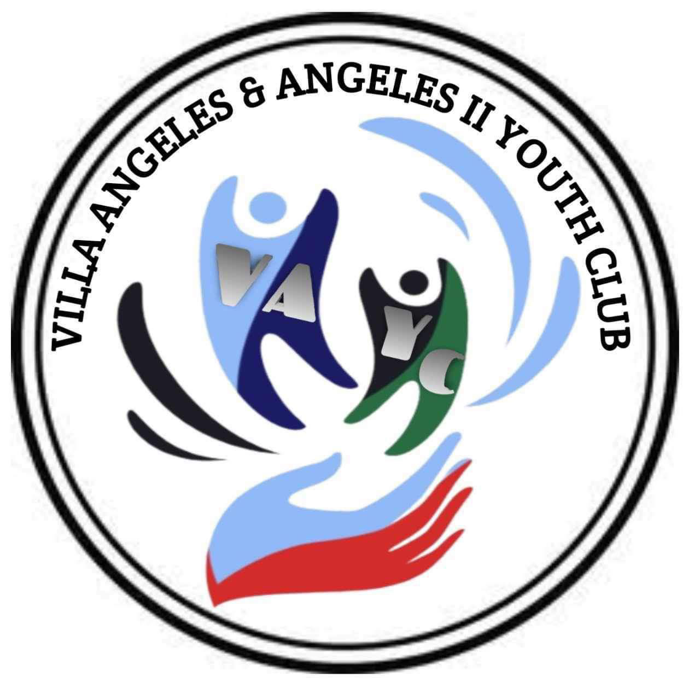

Introduction
Villa Angeles & Angeles Youth Club is a dynamic and vibrant organization
dedicated to empowering youth and enriching communities. Founded with
the vision of creating a safe and supportive space for young people to
connect, learn, and grow, our youth club provides a wide range of
programs and services aimed at fostering personal development,
leadership skills, and community engagement.
History
With the aim of addressing the needs of youth in the local community.
Recognizing the challenges and opportunities facing young people today,
the founders envisioned a youth club that would serve as a hub for
positive social interaction, skill-building, and community involvement.
Since its inception, the organization has grown steadily, expanding its
reach and impact to become a cornerstone of youth development in the
region.
Programs and Services
Villa Angeles & Angeles Youth Club offers a diverse array of programs
and services designed to meet the unique needs and interests of youth in
our community. From academic support and career readiness workshops to
recreational activities and leadership development initiatives, our
programs aim to foster holistic growth and development in young people.
Some of our flagship programs include: Academic Tutoring and Homework
Help Career Exploration and Job Readiness workshops Sports and
Recreation Clubs Arts and Cultural Enrichment Programs Leadership
Training and Youth Empowerment Workshops Community Service Projects and
Volunteer Opportunities
Community Engagement
At Villa Angeles & Angeles Youth Club, we recognize the importance of
community engagement and collaboration in driving positive change. We
work closely with local schools, businesses, nonprofits, and government
agencies to create meaningful partnerships and leverage resources for
the benefit of youth and families in our community. Through community
events, outreach initiatives, and advocacy campaigns, we strive to raise
awareness about the issues affecting young people and mobilize
collective action to address them.
Get Involved
Whether you're a young person looking to join our youth club, a parent
interested in enrolling your child in our programs, or a community
member eager to support our mission, there are many ways to get involved
with Villa Angeles & Angeles Youth Club. From volunteering your time and
expertise to making a donation or attending one of our events, your
support helps us continue making a positive impact in the lives of youth
and families in our community.